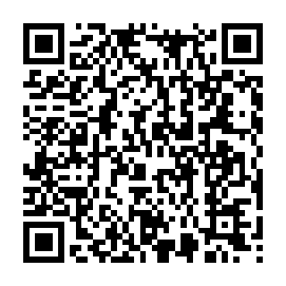
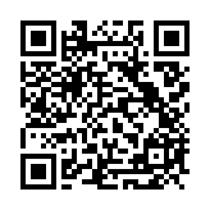
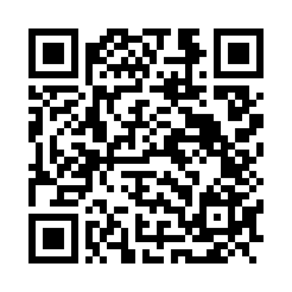

El QR del reverso abre la experiencia correspondiente a esa carta.
Centro técnico AR
Pruebas de realidad aumentada
Esta página se conserva como centro técnico para desarrollo y validación. En la navegación pública, el usuario accede al AR desde una carta desbloqueada de la Colección.
Permite el acceso y muestra el marcador configurado para la carta.
Gira, acerca, aleja, activa el salto y enciende o apaga el confeti 3D.
Experiencias
Herramientas para validar.
Las experiencias pueden abrirse directamente o desde el lector de códigos de StrikeZone.
Nueva experiencia
Tarjeta Yadier AR
Escanea el QR, activa la cámara y apunta al reverso de la tarjeta provisional para ver la pelota anclada a la carta con controles, información y efectos.
Abrir Carta ARVer tarjeta para imprimir →AR de superficie
Pelota 3D
Hazla girar, prueba el rebote en la vista 3D y colócala en AR sobre una superficie.
Abrir pelota AREstadio
Estadio 3D
Explora la maqueta desde todos los ángulos y colócala sobre el piso o una mesa.
Abrir estadio ARRecompensa
Celebración 3D
Después de superar un reto, abre el trofeo, hazlo girar y activa una lluvia de confeti.
Abrir recompensaCódigos StrikeZone
Escanea y entra.

Yadier Molina · Carta AR
Este QR abre la experiencia que reconoce el frente de la tarjeta provisional.
Abrir sin escanear →
Pelota AR
Escanea el código con la cámara de tu teléfono para abrir la pelota 3D.
Abrir sin escanear →